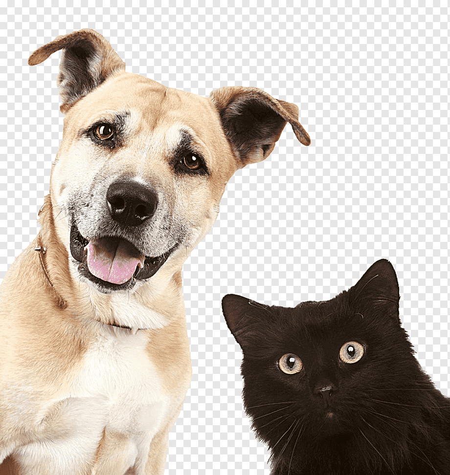

Contando acerca de nosotros
Somos un equipo de personas que trabajamos en relación para rescatar perros y gatos que se encuentran en la calle, sin hogar , sin comida , y nos vemos en la necesidad de encontrarles un hogar.. estamos en contacto y a disposicion de nuevos refugios que quieran acelerar el proceso de adopcion.
Tom y Kutty
 tom es un perro de 5 años de edad, kutty el gato 1 año . Los padres de la nina de 12 años eran los
encargados
del transito de ambos animales , una niña introvertida.
Los padres al pasar el tiempo fueron dandose cuenta que la nena con el contacto con los animales tuvo
un avance importante en cuanto al comportamiento, empezo a ser mas sociable y jugar más con los
niños de su edad, el cambio se produjo mientras los animales permanecian en la casa, lograron despertar
sonrisas y un bienestar en la niña que se encariñaron con ambos animales y ahora seran compañia para
rato, ya que los dos encontraron el hogar. Ya no son tres en la casa , viviran los 5 juntos.
- SAMANTA (42)
- ROBERTO(45)
- MALENITA (12)
- TOM (58)
- kutty (1)